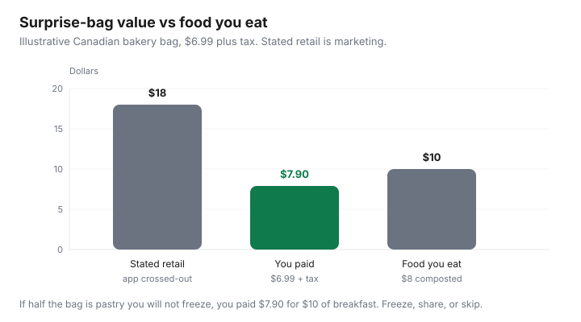

Food & Groceries · Canada
How to make Too Good To Go worth it in Canada (without a pantry full of pastries)
Too Good To Go is easy to install and easy to fail. You pay $6.99 for a bakery surprise, receive eight buns, eat two, and freeze nothing. The app did its job. Your kitchen did not. Canadians then declare surplus “a scam” when they used a surprise bag as a grocery system.
Used properly, TGTG is a Canadian city tool for bakery breakfasts, a café lunch, or the occasional grocery bag you will actually cook — paired with a cheap staple shop at a discounter. It is not Flipp. Coverage is dense downtown and thin in many suburbs after 8 p.m. Check the map before you build a personality.
Disclosure: Too Good To Go is not a natural affiliate product. Saving Optimizer may earn a commission if we later add unrelated freezer-tool or grocery-gift-card links. We do not currently claim a partnership with Too Good To Go, Flashfood, or FoodHero. This playbook works on a free install.
Key takeaways
- Pay the bag price. Treat “$18 value” as marketing. Canadian bakery bags often land around $6–$8 plus tax in 2026 user logs.
- Pick merchants that match meals you already eat. Skip dessert-only bags if pastry is how you waste money.
- Freeze bread the night you pick up. Portion prepared food into lunches. Share with a neighbour if the bag is huge.
- Pair TGTG with a discounter staple run. Do not let surprise contents rewrite the week’s protein.
- Cancel in-app if you cannot make the window. Flashfood is the better grocery chooser at Loblaw banners.
How surprise bags work and typical value ranges
You reserve a bag in the app, pay (or authorize a hold — Too Good To Go’s Canada terms, reviewed 19 Aug 2026, describe reservation pricing and pickup-window charging), and collect in a stated window, often near close. Contents are surplus. Allergens are imperfectly described. If you cannot eat gluten, do not buy a bakery surprise and argue at the counter.
Stenoodie’s 2026 Canadian logs (June and August roundups) show bakery bags commonly $5.99–$7.99 plus tax, grocery surprises from about $6.99–$12.99, plus occasional café meals. CBC’s Waterloo Region surplus-app coverage (2024) is still a fair picture: the discount is real, the logistics are local, and not every city has the same density of pins.

TGTG has also told merchants to aim for roughly half original price or better (2024 Canada marketplace shift discussed in r/TooGoodToGoCanada). The app may still show a crossed-out three-times value. Believe the dollar you pay and the food you eat.
Picking merchants that fit your meals
| Merchant type | Often in the bag | Use it for |
|---|---|---|
| Neighbourhood bakery | Buns, loaves, sometimes pastry | Breakfast; freeze slices day one |
| Café / restaurant | Prepared lunch, odds and ends | Tonight’s meal if you will eat mystery food |
| Grocery (Metro, Loblaws, independents) | Mixed dairy, bakery, random grocery | Only if ratings are strong and you can cook it |
| Dessert-only / donut | Sugar | A treat. Not a system. |
Filter the map to walking distance or a commute pickup. A $7 bag with a $14 round trip at $0.70/km is a donation to the parking lot. Same rule as other surplus apps in the three-app comparison.
Freezing bakery and portioning prepared foods
- Bring a bag. Merchants often appreciate it; some require it.
- At home, separate: eat today, freeze tonight, share tomorrow.
- Slice loaves before freezing. Pastry freezes; cream-filled often does not.
- Prepared food: fridge 2–3 days per Health Canada leftover tips, or freeze in lunch portions.
- Write the pickup date on painter’s tape. Mystery freezer bread is still waste.
This is the same discipline as food-waste systems. TGTG does not exempt you from FIFO.
Pairing TGTG dinners with a cheap staple shop
The bag is a side. The week still needs oats, eggs, frozen veg, and a flyer protein. Shop your discounter as usual. If the surprise bag is a tray of cooked chicken, skip buying thighs that week. If it is cinnamon buns, do not skip protein. Meal-prep households can turn extra buns into freezer breakfasts — see budget meal prep — without letting pastry become the meal plan.
Cancellation, no-shows, and rating etiquette
Too Good To Go’s terms allow cancellations in the app subject to timing; missed pickups can still be charged because the merchant held food. If your meeting runs late, cancel early. Repeated no-shows waste surplus — the opposite of the mission — and can limit your account.
Ratings: score collection experience, quantity, and quality. A bag of honest day-old bread at a fair price is a 5. A bag of two cookies against an $18 claim is not. Refunds are a complaint path with deadlines (terms mention a window measured in days). Do not use one-star reviews as a coupon strategy.
Allergy and diet: surprise means surprise. Vegetarian, halal, gluten-free, and nut-free households should stick to merchants that state those constraints clearly or skip TGTG for chooser apps where you tap a SKU.
When Flashfood is the better grocery tool
Need chicken thighs on a known date at No Frills? Flashfood (and the meat freeze SOP) lets you choose the tray. Need Empire-banner surplus? FoodHero. Need breakfast on a walk home past a bakery? TGTG. Installing all three and touring the city is how the drive eats the discount.
Put a 60-second map check in the Sunday loop. If nothing useful is on your route, buy oats at the discounter and go home.
Sources & date stamps
- Too Good To Go Canada terms (reservation, pickup, cancellation, stated bag value) reviewed 19 Aug 2026.
- Stenoodie TGTG surprise-bag logs, June and August 2026 (Canadian price examples).
- CBC News, surplus apps in Waterloo Region (2024) for local logistics context.
- Health Canada leftover storage tips (fridge 2–3 days or freeze).
- Loblaw–Flashfood news release, 2 Mar 2026 (chooser-app contrast; $58 million 2025 partnership figure is aggregate, not your bag).
Frequently asked questions
How much do Too Good To Go bags cost in Canada?
They vary by merchant. Canadian user logs in 2026 often show bakery bags around $5.99–$7.99 plus tax and grocery surprise bags from about $6–$13. The crossed-out “retail value” is the merchant’s stated number, not a Statistics Canada price. Pay the bag price.
Can Too Good To Go replace grocery shopping?
Usually no. In many Canadian cities it is strongest for bakery, café, and restaurant bags plus some grocery surprises. That can replace a breakfast or a lunch, not a week of dinners. Chooser apps (Flashfood, FoodHero) are the grocery tools.
What if I cannot pick up in the window?
Cancel in the app before the cutoff in Too Good To Go’s terms (the Canada terms describe in-app cancellation rules and charges if you miss pickup). Repeated no-shows hurt your rating and waste the food the app exists to save.
Should I rate a bag that was mostly bread?
Rate honestly on quantity and quality, not on whether you personally like croissants. If the merchant consistently under-fills versus the stated value, a fair rating helps the next shopper. Do not abuse ratings to fish for refunds on a surprise you accepted.
When is Flashfood the better tool?
When you need specific meat, dairy, or produce at a Loblaw banner and you will freeze same day. TGTG is the better tool for a bakery you pass at closing. See the three-app comparison.